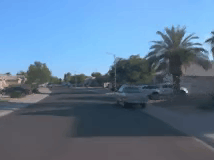
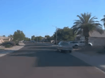

Inverse Neural Rendering for Explainable Multi-Object Tracking
We propose to recast 3D multi-object tracking (MOT) from RGB cameras as an Inverse Neural Rendering (INR) problem. By optimizing via a differentiable rendering pipeline over the latent space of pre-trained 3D object representations, we retrieve the latents that best represent object instances in a given input image. We investigate not only an alternate take on tracking but our method also enables examining the generated objects, reasoning about failure cases, and resolving ambiguous cases. We validate the generalization and scaling capabilities of our method on automotive datasets that are completely unseen to our method and do not require fine-tuning.
 
